4 Visualizing Data, Probability, the Normal Distribution, and Z Scores
This lab discusses the basics of visualizing data, probability, the normal distribution, and z scores. The following packages are required for this lab:
- sfsmisc
- psych
- car
- tidyverse
4.1 Histograms and Density
Recall that histograms are used to visualize continuous data. Histograms are not used to visualize categorical data. Instead, a bar plot is advised for categorical data. The geom_hist() function creates histograms in R using ggplot visualizations. The following is an example of creating a histogram of the age variable within the ds data set.
ggplot(ds, aes(age)) +
geom_histogram()## `stat_bin()` using `bins = 30`. Pick better value with `binwidth`.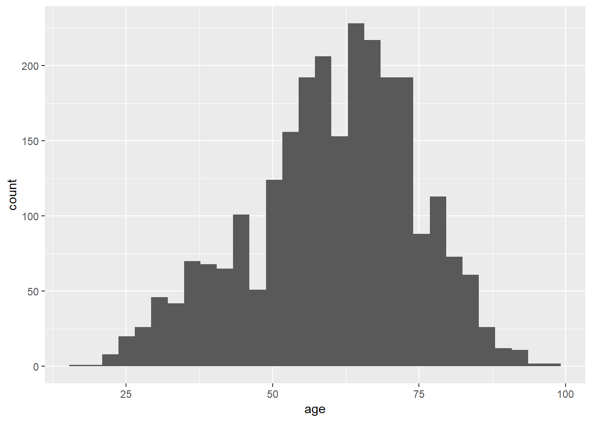
The histogram displays the frequency of age for given bins. Alternatively, the density of age can be shown instead of frequency by making a slight change in the visualization. Use the mapping aesthetic inside the geom_histogram() function and setting x as the age variable and y as ..density..
ggplot(ds) +
geom_histogram(aes(x=age, y=..density..))## `stat_bin()` using `bins = 30`. Pick better value with `binwidth`.
The shape of the plot is the same for the frequency and density histograms; however, the y-axis measures in different units. The area associated with the largest y-axis value suggest that a higher percentage of respondents are likely to provide an age within the ages on the x-axis.
Data is organized into ranges, known as bins, to compose the x-axis. The number of bins is a potentially contentious topic; however, a good recommendation is to set the number of bins equal to \(\sqrt n\), where n is the number of observations. To change the number of bins, use bins=n inside the geom_histogram() function. The square root of n for the current data set is a little over 50, so set the bins to be 50.
ggplot(ds, aes(age)) +
geom_histogram(bins=50)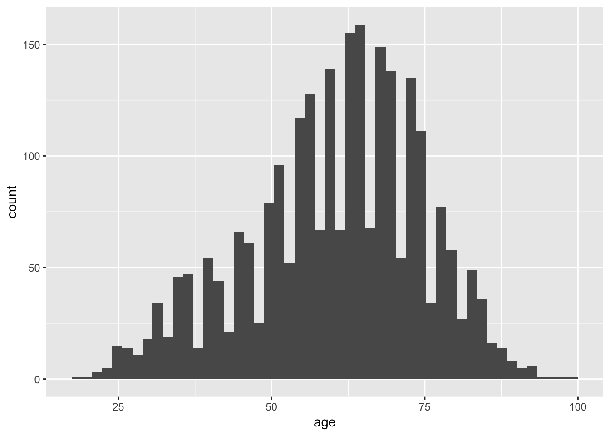
Using various functions along with the histogram function, the visualization is improved with more meaningful information. These functions can help:
- xlab(“X-Axis Label”)
- Sets the label for the x-axis
- ylab(“Y-Axis label”)
- Sets the label for the y-axis
- ggtitle(“Title”)
- Sets the histogram title
- coord_cartesian(ylim=c(min:max), xlim=c(min:max))
- Sets the limits of the x and y axes.
The following is an excellent example of a histogram of the age data.
ggplot(ds, aes(age)) +
geom_histogram(bins=50) +
xlab("Age") +
ylab("Frequency") +
ggtitle("Histogram of Age") +
coord_cartesian(ylim=c(0,175), xlim=c(15,95)) +
theme_light() # Sets the theme. There are a lot to choose from.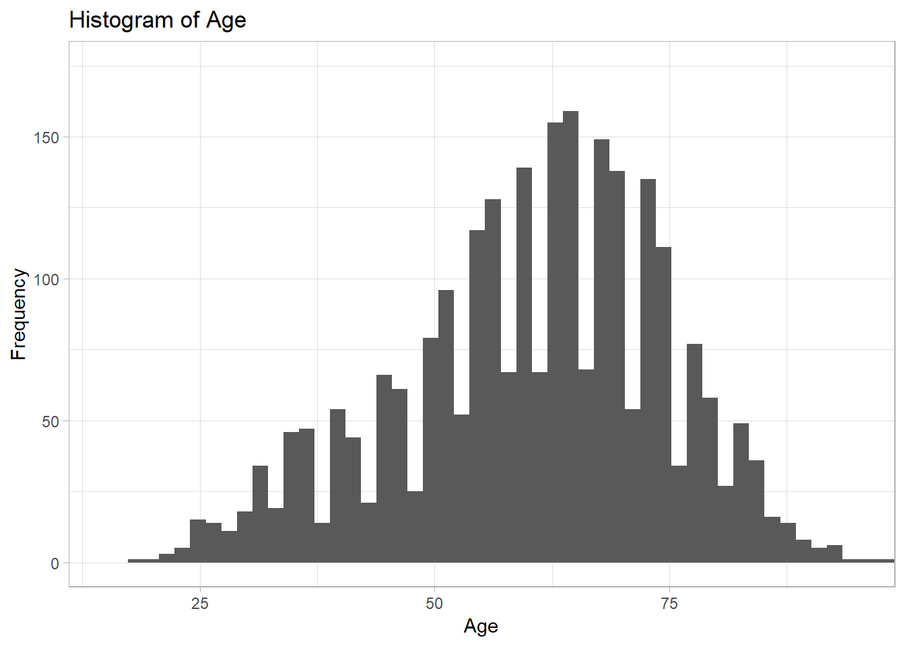
4.1.1 Normal Distribution and Histograms
Data approximated by the normal distribution can define probabilities. Using R, the normal distribution “bell curve” can be projected over a histogram.
Given an identified mean and standard deviation, and a density histogram, the stat_function() function can project a normal distribution as follows. Specify fun=dnorm.
ggplot(ds, aes(age)) +
geom_histogram(aes(x=age, y=..density..), bins=50) +
stat_function(fun=dnorm, args = list(mean=mean(ds$age), sd=sd(ds$age)), color="red")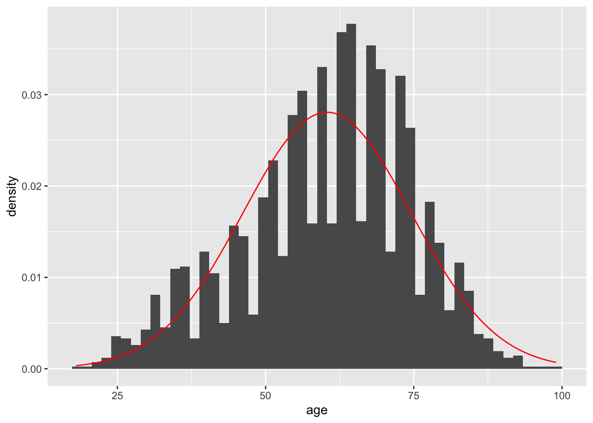
Comparing the histogram plot to the normal distribution curve generated may prove difficult. The geom_density() function can draw a line using density data for age alongside the projected line of what the normal distribution would appear like given the mean and standard deviation. The two shapes can then be compared visually to interpret whether the age data can be approximated by the normal distribution.
ggplot(ds, aes(age)) +
geom_histogram(aes(x=age, y=..density..), bins=50) +
stat_function(fun=dnorm, args = list(mean=mean(ds$age), sd=sd(ds$age)), color="red") +
geom_density(color="blue")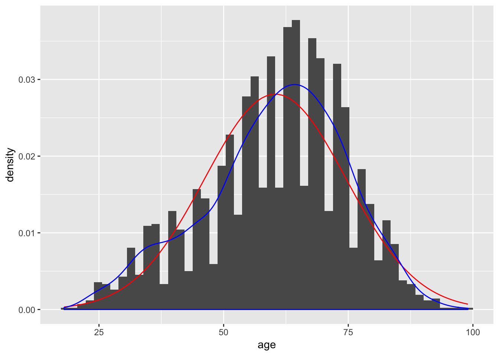
The culmination of the histogram, curve, and density line is improved via the addition of limits and labels to the x-axis and y-axis, defining a number of bins, and a chart title. Including fill and outline colors for the histogram can also make it more readable:
ggplot(ds, aes(age)) +
geom_histogram(aes(x=age, y=..density..), bins=50, fill="#d3d3d3", color="black") +
stat_function(fun=dnorm, args = list(mean=mean(ds$age), sd=sd(ds$age)), color="red") +
geom_density(color="blue") +
ggtitle("Histogram of Age") +
xlab("Age") +
ylab("Density") +
theme_bw() +
coord_cartesian(xlim=c(15,95), ylim=c(0,0.04))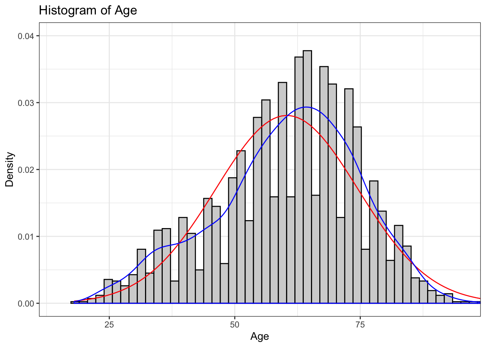
4.2 Probability and Distributions
R supports a number of distributions; however, for the purpose of these labs we will focus primarily on the normal and binomial distributions. View the help(Distributions) documentation to explore the distributions supported by R.
help(Distributions)
The following R functions are applicable to the normal distribution:
dnorm()pnorm()qnorm()rnorm()
The dnorm() function provides the height of a probability distribution function at a given x value: dnorm(x, mean=$\mu$, standard deviation=$\sigma$). Note: The value returned by the dnorm() function is not the probability associated with the occurrence of the x value!
The default mean and standard deviation for the dnorm() function is 0 and 1, respectively. The following example finds the height of the probability distribution function at \(x=2\) with \(\mu = 4\) and \(\sigma = 1.5\).
dnorm(2, mean = 4, sd=1.5)## [1] 0.10934The dnorm() function used in conjunction with the age variable from ds data set can find the height of the probability distribution function. In the following example, the dnorm() function will find the height of the probability distribution function for 65. Similar to previous examples, an argument exists to ignore NA and missing values.
dnorm(65, mean=mean(ds$age, na.rm = T), sd=sd(ds$age, na.rm=T))## [1] 0.02662361The dnorm() returns the height of the probability distribution function as 0.027. Note: This is a random value and, by itself, is not meaningful. The dnorm() function returns the relative likelihood, which can lead to determining a probability; however, to understand this value further requires an explanation of calculus.
For continuous data, the probability of a single value is small (near zero), so instead the approach should be to find the probability a value occurs within a specified range. The probability associated to a value occurring within a specified range is equal to the area of the probability distribution function between the two points. In calculus this is defined as finding the integral of the probability distribution function.
\[\int_{-x_1}^{x_2}{f_X(t)\,dx}\]
The above formula is the cumulative distribution function for two points, \(x_1\) and \(x_2\). In this case, \(x_1\) is defined as the lower bound and \(x_2\) is defined as the upper bound.
R includes the calculus function integrate.xy() to return the probability.
integrate.xy(density(ds$age)$x,density(ds$age)$y,65,66)## [1] 0.02917993The probability associated to an age between 65 and 66 in the age variable is .029 (\(\approx\) 3% chance).
Similarly, the pnorm() function calculates probabilities associated to a given x value. The default for the pnorm() function is the cumulative distribution function with a lower bound of \(-\infty\) and an upper bound of x.
The following example calculates the probability associated to an age value between \(-\infty\) and 5, given \(\mu = 6\) and \(\sigma = 6\).
pnorm(5, mean = 6, sd = 2)## [1] 0.3085375The pnorm() calculates the probability of observing a value between \(-\infty\) and 5 as 0.31. The following example uses the pnorm() function with the ds data set to find the probability that a respondent is 65 or less years old.
pnorm(65, mean=mean(ds$age, na.rm=T), sd=sd(ds$age, na.rm = T))## [1] 0.6277983To calculate the probability associated to an age of 65 or greater, the lower.tail = FALSE argument will look at the upper tail (right side of the probability distribution function). This is equal to the difference between 1 and the lower tail probability previously calculated.
pnorm(65, mean=mean(ds$age, na.rm = T), sd=sd(ds$age, na.rm = T), lower.tail = FALSE)## [1] 0.3722017The qnorm() function is the inverse function of the pnorm() function. Given a probability, mean, and standard deviation, the qnorm() function will return an x value from the probability distribution function. The following example finds the upper bound x value of the probability distribution function associated to the probability, or area under the curve, of 0.3 given \(\mu = 5\) and \(\sigma = 1\).
qnorm(.3, mean=5, sd=1)## [1] 4.475599The following calculates the upper bound age from the age variable in the ds data set to demonstrate further associated to a 40% probability. That is, the qnorm() function calculates the age that 40% of respondents are equal or less to.
qnorm(.4, mean=mean(ds$age, na.rm = T), sd=sd(ds$age, na.rm = T))## [1] 56.7677Lastly, the rnorm() function will generate random values that follow a normal distribution given a number of points (n), provided \(\mu\), and \(\sigma\). The following example calculates 200 random values given \(\mu = 6\) and \(\sigma = 2\). The random values are stored to the rvalues object.
rvalues <- rnorm(200, mean=6, sd=2)
ggplot() +
geom_histogram(aes(rvalues), bins=14)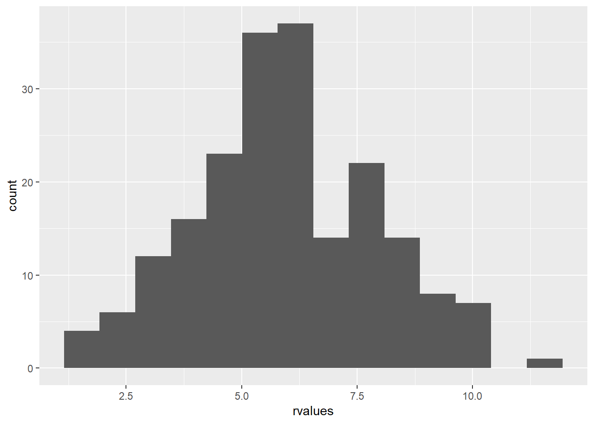
Note: The discussed functions are relevant to the normal distribution functions provided by R. R includes similar functions for other distributions, with equivalent functionality.
4.3 Visualizing Normality
Thus far the normal distribution has been discussed without visualization. When graphed, data that follow a normal distribution resemble a bell shaped curve. To demonstrate, the following code employs the rnorm() function to generate 1000 random values with \(\mu = 100\) and \(\sigma = 20\), and assigns the values to an object named random.
random <- rnorm(1000, mean = 100, sd = 20)Inspecting a density histogram of the random object yields a bell shaped curve.
ggplot() +
geom_histogram(aes(random, ..density..), fill="white", color="black")## `stat_bin()` using `bins = 30`. Pick better value with `binwidth`.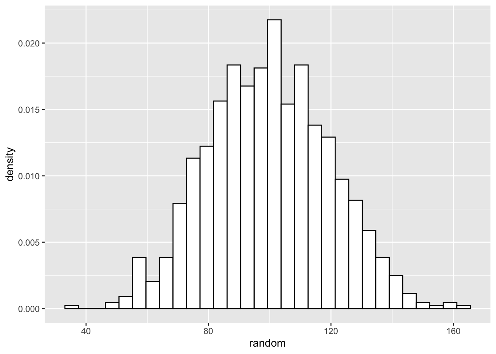
Let’s start figuring out how to check if our data is normally distributed. There are many packages than will generate a density curve of your data and a projected normal distribution for comparison, but building all of the visualizations in ggplot provides both an intuitive and informative method of doing so. Start by creating a density plot of the randomly generated data.
Let’s start figuring out how to check if our data is normally distributed. At the beginning of this lab we should have installed and loaded the package “sm”. We use the sm.density() function to visualize data and to project what should be the normal distribution of the data, given the mean and standard deviation of the data. Let’s start with our randomly generated data. We include the model="Normal" argument at the end of the function, so that sm.density knows to use the normal distribution.
ggplot() +
geom_density(aes(random))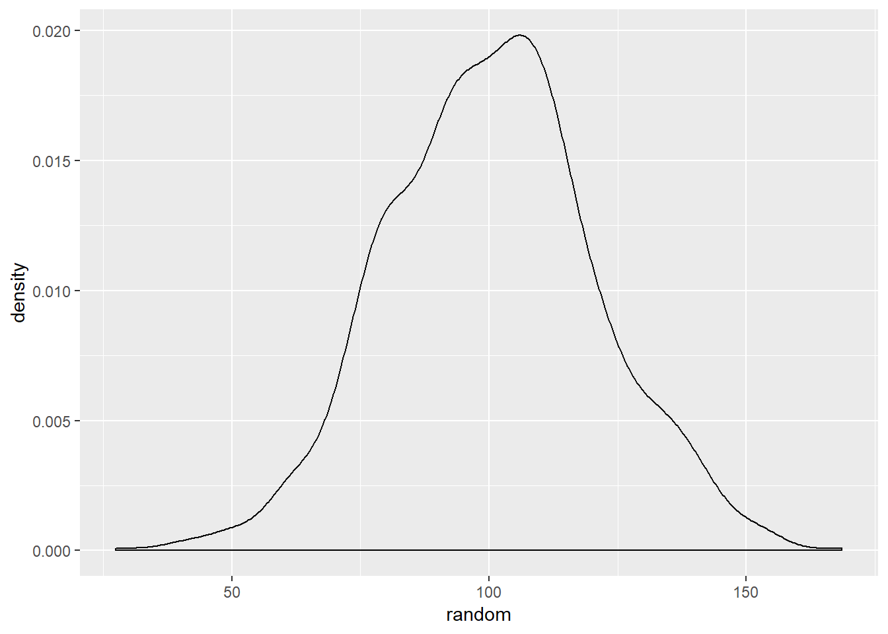
Given the random values consists of values generated by the rnorm() function, this distrubtion resembling the normal distribution is unsurprising.
The following code generates a density line for the age variable from the ds data set and a projected normal distribution given the mean and standaard deviation of the variable. Indicating alpha=.5 will make the line slightly transparent.
ggplot(ds, aes(age)) +
geom_density(aes(ds$age)) +
stat_function(fun=dnorm, args=list(mean=mean(ds$age), sd=sd(ds$age)), color="red", size=2, alpha=.5)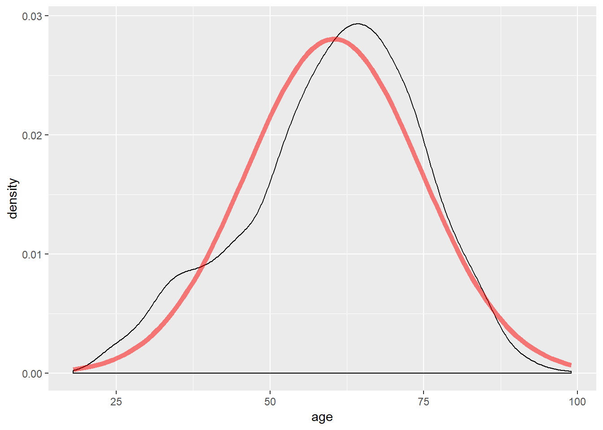
The shape of the density line closely resembles a normal distribution; however, note the slight skew.
Another method to view whether data follows a normal distribution is to view the QQ plot, available via the qqPlot() function.
A QQ plot visualizes data based on the quantiles of the provided variable against the quantiles that would exist if the data were normally distributed. Data that follows the normal distribution should be in a line with a set slope. Including stat_qq() generates a QQ plot. The following example generates a QQ plot of the age variable.
ggplot(ds, aes(sample=age)) +
stat_qq()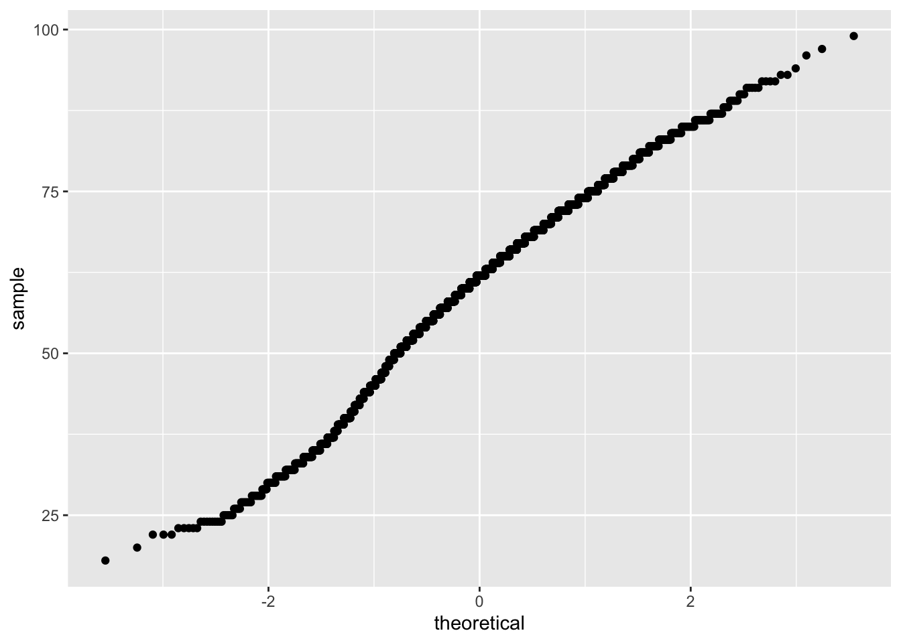
To further inspect the normality, a diagonal line can be generated that will visualize what the slope of the data should be if it were normally distributed. To include such a line, use geom_abline(). The slope and intercept of the line must also be calculated. Doing so requires a small amount of basic linear algebra. Find the first and third quantiles of the age variable and set it to an object named y, then find the theoretical first and third quantiles for normally-distributed data and set it to x. Calculate the slope by taking the diference in y over the difference in x and set that to an object named slope. Then solve for the intercept and it it to an object named intercept.
y <- quantile(ds$age, c(0.25, 0.75)) # Find the 1st and 3rd quantiles
x <- qnorm( c(0.25, 0.75)) # Find the matching normal values on the x-axis
slope <- diff(y) / diff(x) # Compute the line slope
int <- y[1] - slope * x[1] # Compute the line intercept
ggplot(ds, aes(sample = age)) +
stat_qq() +
geom_abline(intercept = int, slope = slope, color = "blue", size = 2, alpha = 0.5 )
In the graphic above, the solid blue line exhibits where data should fall if it follows a normal distribution, and the blue dash lines represent confidence intervals. The individual circles represent data points from the variable. If the data points is within the intervals, then the data likely follows a normal distribution. The interpretation of this QQ plot yields that the data likely follows a normal distribution, as expected given the data was generated via the rnorm() function.
The QQ plot confirms the sm.density() plot: the age variable closely follows a normal distribution. Note that some values are outside the confidence interval. These are the points associated to the skew previously observed.
Another last method to inspect whether data follows a normal distribution is the box plot. Box plots provides quartiles and the median, and returns individual unique values at the edges of our data. The following code generates a box plot of the age variable.
ggplot(ds, aes(x="", y=age)) +
geom_boxplot()
Note the middle line is the middle quartile, or the median. The distance between the median line and the line below it represents the second quartile. The distance from the bottom of the second quartile line to the very bottom line, or “whisker” is the first quartile. Above the median, the distance between the median line and the next line above it is the third quartile, and the area above that, and below the top whisker, is the fourth quartile. Notice that for the box plot of our randomly generated data, the distance between quartiles is relatively even.
The distance between quartiles is relatively even; however, note the difference to the previously generated box plot from the rnorm() data.
4.4 Z-Scores
Standardizing, or scaling, data provides conveniences in discussing data. For instance, discussing how many standard deviations a particular value occurs from the mean is more meaningful than purely the distance. Scaling data in terms of z-scores provides the number of standard deviations a value is from the mean.
The following example employs the scale() function to calculate z-score for each data point and assigns them to a newly created z.age variable in the ds data set. To do this, use the mutate() function, which is a tidyverse function that creates new variables or modifies existing variables. The scale() function is enclosed by the c() function to ensure the result is a 1 dimensional vector:
ds <- ds %>%
mutate(z.age = c(scale(age)))Using a filter approach, the following example finds the z-score associated to women younger than 19 years old. First filter the data with the preferred stipulations, then use the select() verb from the dplyr() package (part of the tidyverse!) to view the results. All of this is connected using the pipe function, %>%.
ds %>%
filter(f.gender == "Women" & age < 19) %>%
dplyr::select(f.gender, age, z.age)## f.gender age z.age
## 1 Women 18 -2.981749The result shows that, within the ds data set, there is one respondent that identified as a woman under 19 years old. The z-score for this respondent is -2.98, which is interpreted as this respondent’s age is 2.98 standard deviations below the mean.
Given a z-score, the mean age of respondents is assumed as much higher than the 18 year old woman. The difference between the mean age of respondents and the woman is the product of the z-score and standard deviation. The following calculates the standard deviation of the age variable.
sd(ds$age, na.rm = TRUE)## [1] 14.20894The sd() function returns the standard deviation of data. The product of the sd() function and calculated z-score, is the difference between the 18 year old woman and mean age of respondents.
2.981748*sd(ds$age, na.rm = TRUE)## [1] 42.36748The difference between the 18 year old woman and mean age of respondents is \(\approx\) 43.38 years.